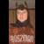

|
 | Egy nekünk címzett levél, mely a tanárok segélykiáltásaként is fölfogható:
Egy magyarországi általános iskolában tanítok középkorú tapasztalt kollektívában. Településünk nem Borsodban található, még csak nem is a közelében. Tágabb környezetünkben alig jelent problémát a cigánykérdés egyelõre. Bár egyik alsós gyerekünk a tanító nénijének már beszólt a minap, hogy hiába dumál, mer mán úgyis mink vagyunk többségben! Iskolánkban félévzáró értekezletet tartottunk, melyen a szokásoknak megfelelõen értékeltük az osztályok teljesítményét elsõtõl nyolcadikig. Az alábbi értékelés az elsõsök osztályfõnökétõl és napközis nevelõitõl származik, akiknek a nevét (mint ahogy iskolánk, településünk, megyénk és jómagam nevét sem) nem teszem közzé, okulva egyebek mellett a tanárverésekbõl és a miskolci rendõrkapitány esetébõl, aki bátorkodott szakmai kérdésekben tényeket közzétenni a cigánybûnözésrõl - szóval, mert félünk. A pedagógus kollégák szavait, mondatait szó szerint közlöm. Nem rendszereztem tematikailag a mondatokat, úgy írtam le, ahogy azok elhangoztak.
1. osztály félévi értékelése (2008/09): Az osztályomba járó gyerekek túlnyomó többsége kritikán aluli képességekkel és szülõi háttérrel rendelkezik. Mindössze négyen vannak, akik megfelelõ családi háttérrel rendelkeznek. Szaguk alapján - nem félek kimondani - magamban büdösekre és illatosokra osztom az osztályt. Ha szóvá teszem a szülõknek, hogy a gyerekük mosdatlanul jön iskolába, ordibálnak, fenyegetõznek Mi köze hozzája, magának az a dolga, hogy megtaniccsa! Vannak, akiknek a kezén hétfõn még ott van a pénteki vízfesték nyoma. Volt, akinek a ruháján és a hajában hetekig ott volt az ételmaradék. Már pedig nem fogom hagyni, hogy büdösen, koszosan járjanak az osztályomba! (Megjegyzés: Van, akinek retkes a bõre, és gyakori a tetvesedés az iskolában.)
A gyerekek követelõzõk, akaratosak, hangosak, türelmetlenek, irigyek, koszosak, mosdatlanok. Vannak közöttük, akik éheznek, és ez számukra fizikai fájdalmat okoz. Az az igazság, hogy többek szüleit kiskorúak veszélyeztetése miatt fel kellene jelentenünk. Egyelõre nem tettük, mert bizonyítani is kellene, és ki tudja, mi lenne a következménye. A minap este felhívott otthon mobilion az egyik gyerek családja és megfenyegetett. Senkinek nem adtam meg a mobil számomat.
A Családsegítõ Szolgálatnak szóltunk már, de a szolgálat munkatársainak segítségét is durván visszautasítják. Az osztályban többeknek nincs téli ruházata, a legnagyobb fagyban is vászoncipõben járnak, de kólára, chipsre és ékszerekre valahonnan futja.
A képességeikrõl szólva: A szóbeli kérdéseket nem értik, nem fogják fel. A betûk hangjait nem hallják meg, nem tudják értelmezni. Nem tudnak egymással játszani, csak veszekedni, és egyfolytában ordítoznak. Némi javulás, hogy az osztály legdurvább gyereke már nem verekszi végig az egész napot. Négy gyerek kivételével nem tudnak semmit, nem ismerik a betûket, a számokat. Hazudnak és lopnak, pedig csak 6 évesek. Nem úgy lopnak, hogy elcsenik az asztalról a radírt vagy a ceruzát, hanem elõre megfontoltan, kitervelten. A lányok erõszakoskodnak a fiúkkal. Rájuk másznak, tapizzák, csókolgatják õket, a fiúk igyekeznek menekülni.
Az iskolai élet egy végeláthatatlan küzdelem az osztályban. Semmit sem érnek a tanult és a korábbi osztályaimban sikerrel alkalmazott pedagógiai módszerek, pedig azokban az osztályokban is volt gondom bõven. Amíg egy szót leírnak, kétszer-háromszor beesnek a pad alá, mert nem tudnak egy helyben ülni. Tudják viszont betéve a Tv-sorozatok tartalmát. Éjszaka is a Tv elõtt ülnek, mert elmondják, hogy mi volt az esti horror és pornó filmekben.
Óriási bajok, súlyos bajok vannak! A minap egyikük lepisilte a másik táskáját és tetves ribancnak nevezték egymást. A könyvet legtöbbször félre kell tetetnünk velük órán, mert remény sincs arra, hogy haladjunk az anyaggal, inkább megpróbálunk a tanítás helyett nevelni, amennyire lehet. Legtöbbnek nincs felszerelése, tolltartója, tornacucca, és mellette játsszák az agyukat. Ha a gyerek semmit sem tanul az iskolában, akkor is jobb helyen van itt, mint otthon. Egyiküknek év eleje óta egy aláírás sincs az ellenõrzõjében, félévkor a szülõ mégis rám rontott, reklamált a gyerek értékelése miatt.
Folyamatosan hadakozunk a szülõkkel. Nem tudnak egy helyben ülni, egyáltalán a széket használni, nem tudnak orrot fújni, ceruzát használni. Egyik kezemmel a ceruzás kezét fogom, másikkal mutatom, hogy hova nézzen. Nem figyel fel a saját nevére! A lapot középen kezdi el nézegetni és nem a bal felsõ saroknál. Mint egy majom, úgy mutogatom neki ugyanazt az ábrát egyszerre a táblán, és a könyvben is, nem tudja, hogy mit kell néznie. Nem tudja, melyik a jobb és a bal keze. Nem ismerik az alatta, fölötte, mellette fogalmakat. A menzán nem tudja a kanalat használni. A száját teszi bele a rizsbe, úgy lapátolja be az ételt, gyorsan, mohón, mint a kutyák. Nem tudják használni a WC-t.
Már az oviba sem jártak rendesen. Ha a kötelezõ nagycsoportba be is volt íratva a gyerek, egy napot járt, két hétig hiányozott, így ment egész évben. A leggyakrabban használt szavuk az, hogy Akarom, Akarom, Akarom!!
Eddig az idézet. Néhány egészen elképesztõ történetet kihagytam, mert beazonosíthatóvá tenne minket. Iskolánkban még valamivel kevesebb a cigány, mint a magyar gyerek. Ismerve az elsõsök és az óvodás gyerekek összetételét, egy, legfeljebb két éven belül megfordul az arány. (Megjegyzem: tantestületünk nem jogosult a problémás gyerekeket tanító pedagógusoknak járó illetményre nem mintha ez megoldást jelentene, legfeljebb a fizetésünk haladná meg a százezer forintot.) A kollektíva amúgy kiváló, mondhatnám, hogy rutinos, harcedzett. Jól tudjuk, hogy kis újjal sem nyúlhatunk hozzá a cigánygyerekhez, amikor órán lehülyéz, tudjuk, hogy nem érdemes még csak kiabálnunk sem a kezelhetetlen tanítvánnyal, mert bejön az öntudatos cigánycsalád, ordibál, fenyegetõzik, netán kiveszi a gyereket az iskolából, mi meg bezárhatunk, mert a kritikus alá csökken a létszám. Sajnos igaza van a borsodi cigányvajdának, aki így fogalmazott a minap: egy cigánygyereknek több joga van, mint a tanárnak!
Egy ideje észrevettük, hogy nem egyenlõ mércével mérjük a magyar és cigánygyerekeket. Hátrányos megkülönböztetésben részesítjük a normális családi helyzetben lévõ tanítványainkat azáltal, hogy a neveletlen és gyakran buta gyerekekkel kénytelenek vagyunk elnézõbbek lenni, mert számolnunk kell a kellemetlen következményekkel. Az integrált oktatás következtében szinte minden osztályban hátrányt szenvednek a magyar gyerekek, mert az állandó fegyelmezési kényszer tõlük veszi el az idõt. Mivel a 70-es IQ fölötti gyerekeket már integráltan kell tanítanunk, alig van lehetõségünk a tehetséggondozásra. (Megjegyzem. amikor integrált oktatásról beszélünk, akkor ez iskolánkban ettõl a tanévtõl már a kisebbségben lévõ magyar gyerekek cigány osztályokban való tanítását jelenti.) A cigányok parasztgyereknek nevezik a magyar gyerekeket, mégsem megy senki az ombudsmanhoz, de kikérik maguknak, ha a tanár vagy a tankönyv a cigány szót használja rájuk.
Egyik kolléga sem cigánygyûlölõ. Mi több, mi köszönünk elõre az utcán a cigány tanítványaink szüleinek, igyekszünk alkalmazkodni a kihívásokhoz. Cigány tanítványaink közül van több jó képességû, tehetséges és jó modorú gyerek is, akinek az oktatására kiemelt figyelmet szentelünk, talán azért is, hogy bizonyítsuk: nem a származás alapján tanítunk és nevelünk. És ez valóban így is van. És bármennyi gond is van velük, sajnáljuk azokat a cigánygyerekeket, akik minõsíthetetlen családi környezetbõl, koszos putrikból, netán éhezve jönnek iskolába. Számunkra ugyanakkor nem kérdés, hogy létezik-e Magyarországon cigánykérdés, mert mi tudjuk, a saját bõrünkön tapasztaljuk, hogy létezik, bármit mondjanak is a politikusok. Aki ezt tagadja és nem tesz ellene semmit, az felelõtlen és bûnös politikát folytat. Nehéz megmondani, hogy mi lenne a megoldás, és nem is a mi dolgunk, mi csak normális körülmények között szeretnénk tanítani, mert ez a szakmánk, ez a hivatásunk. De tisztán látjuk, kiket adunk tovább a szakmunkásképzõkbe, és tudjuk, hogy ha így folytatódik, 10-20 év múlva már nem lesz ebben az országban elég képzett dolgos kéz, és nem lesz, aki megtermelje a nyugdíjunkat. És azt is látjuk - a KSH népességi adatai is elõrejelzik -, hogy rövidesen kisebbségbe kerül a magyarság saját hazájában. S ha a többség olyan lesz, mint a mostani alsósaink - márpedig csodát a legnagyobb erõfeszítések árán sem tudunk tenni velük -, Isten óvja hazánkat, gyermekeinket és unokáinkat!
| | vissza a fõoldalra |  |
| 1 2 3 4 5 6 | |  | | | | | | | | | | | | | | 

|
| | | | | | | | 1 2 3 4 5 6 |  |
|


túraszervezõ
túra-rss
mi ez?

legjobbak
legolvasottabbak
tartalomjegyzék
rss feed

AboryM
Caesar
Count Grishnackh
cscsabi
eürdüngh
Feki
GyalogKakukk
Ishukone
Kadzseszka
LACI1993
Mini
Muska
Rommel
Segi
Takezó
tommylee
vikcee
|